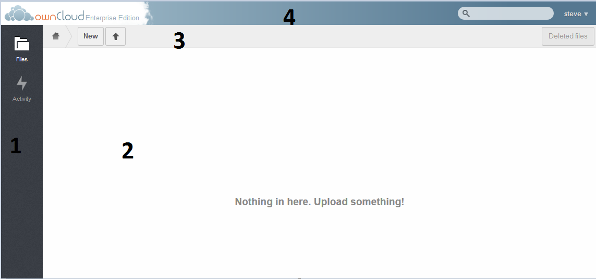

Main ownCloud screen¶
Once logged into ownCloud, the main screen will be displayed.

There are four sections in the main ownCloud screen
- This is the apps bar. Any user related apps will be displayed here. In a default enterprise edition of ownCloud, the Files app and the Activity app are listed.
- This section will display all data loaded into ownCloud.
- The home button brings the user to the home directory. The New button allows the user to create a file or folder, or link, and the upload arrow allows the user to upload a file.
- The search box allows the user to search and the user name pull-down can bring the user to the Personal page for personal configurations as well as log the user out.